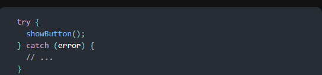
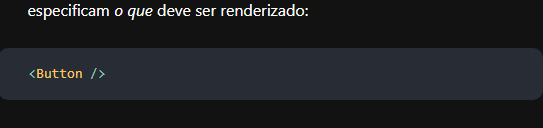
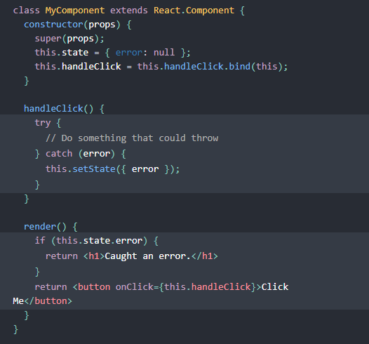

ERROR Boundaries
No passado, erros de JavaScript dentro de componentes usados para corromper o estado interno do React e fazer com que ele emitisse erros enigmáticos nas próximas renderizações. Esses erros sempre foram causados por um erro anterior no código do aplicativo, mas o React não forneceu uma maneira de manipulá-los normalmente em componentes e não pôde recuperá-los.
Introduzindo limites de erro
Um erro JavaScript em uma parte da interface do usuário não deve interromper todo o aplicativo. Para resolver esse problema para os usuários do React, o React 16 introduz um novo conceito de "limite de erro".
Os limites de erro são componentes do React que capturam erros JavaScript em qualquer lugar da árvore de componentes filho, registram esses erros e exibem uma interface do usuário de fallback em vez da árvore de componentes que travou. Os limites de erro detectam erros durante a renderização, em métodos de ciclo de vida e em construtores de toda a árvore abaixo deles.
- Manipuladores de eventos (saiba mais)
- Código assíncrono (por exemplo, ou retornos de chamada)setTimeoutrequestAnimationFrame
- Renderização do lado do servidor
- Erros lançados no próprio limite de erro (em vez de seus filhos)
Um componente de classe se torna um limite de erro se ele define um (ou ambos) dos métodos de ciclo de vida estáticos getDerivedStateFromError() ou componentDidCatch(). Use para renderizar uma interface do usuário de fallback após um erro ter sido lançado. Use para registrar informações de erro.static getDerivedStateFromError()componentDidCatch()
Então você pode usá-lo como um componente regular:
Os limites de erro funcionam como um bloco JavaScript, mas para componentes. Somente componentes de classe podem ser limites de erro. Na prática, na maioria das vezes, você desejará declarar um componente de limite de erro uma vez e usá-lo em todo o aplicativo.catch {} Observe que os limites de erro capturam apenas erros nos componentes abaixo deles na árvore. Um limite de erro não pode capturar um erro dentro de si mesmo. Se um limite de erro falhar ao tentar renderizar a mensagem de erro, o erro se propagará para o limite de erro mais próximo acima dele. Isso também é semelhante a como o bloco funciona em JavaScript.catch {}
Demonstralção ao VIVO
Confira este exemplo de declaração e uso de um limite de erro.
Onde colocar limites de erro
A granularidade dos limites de erro depende de você. Você pode encapsular componentes de rota de nível superior para exibir uma mensagem "Algo deu errado" para o usuário, assim como as estruturas do lado do servidor geralmente lidam com falhas. Você também pode encapsular widgets individuais em um limite de erro para protegê-los de travar o resto do aplicativo.
Novo comportamento para erros não detectados
Essa mudança tem uma implicação importante. A partir do React 16, os erros que não foram detectados por nenhum limite de erro resultarão na desmontagem de toda a árvore de componentes do React.
Debatemos essa decisão, mas em nossa experiência é pior deixar a interface corrompida no lugar do que removê-la completamente. Por exemplo, em um produto como o Messenger, deixar a interface do usuário quebrada visível pode levar alguém a enviar uma mensagem para a pessoa errada. Da mesma forma, é pior para um aplicativo de pagamentos exibir um valor errado do que renderizar nada.
Essa alteração significa que, ao migrar para o React 16, você provavelmente descobrirá falhas existentes em seu aplicativo que passaram despercebidas antes. Adicionar limites de erro permite que você forneça uma melhor experiência do usuário quando algo dá errado.
Por exemplo, o Facebook Messenger encapsula o conteúdo da barra lateral, do painel de informações, do registro de conversa e da entrada de mensagens em limites de erro separados. Se algum componente em uma dessas áreas da interface do usuário falhar, o restante deles permanecerá interativo.
Também recomendamos que você use os serviços de relatório de erros JS (ou crie seus próprios) para que você possa aprender sobre exceções não tratadas à medida que elas acontecem na produção e corrigi-las.
Rastreamentos de pilha de componentes
O React 16 imprime todos os erros que ocorreram durante a renderização no console em desenvolvimento, mesmo que o aplicativo os engula acidentalmente. Além da mensagem de erro e da pilha JavaScript, ele também fornece rastreamentos de pilha de componentes. Agora você pode ver onde exatamente na árvore de
Você também pode ver os nomes de arquivos e números de linha no rastreamento de pilha de componentes. Isso funciona por padrão em projetos Criar aplicativo React:
Se você não usa o Create React App, você pode adicionar este plugin manualmente à sua configuração Babel. Observe que ele é destinado apenas para desenvolvimento e deve ser desativado na produção.
Nota
Os nomes de componentes exibidos nos rastreamentos de pilha dependem da propriedade Function.name. Se você oferecer suporte a navegadores e dispositivos mais antigos que talvez ainda não forneçam isso nativamente (por exemplo, IE 11), considere incluir um polyfill em seu aplicativo empacotado, como function.name-polyfill. Como alternativa, você pode definir explicitamente a propriedade displayName em todos os seus componentes.Function.nameQue tal tentar/pegar?
try / catch é ótimo, mas só funciona para código imperativo:  No entanto, os componentes do React são declarativos e especificam o que deve ser renderizado: 
Os limites de erro preservam a natureza declarativa do React, e se comportam como você esperaria. Por exemplo, mesmo que ocorra um erro em um método causado por um lugar profundo na árvore, ele ainda se propagará corretamente para o limite de erro mais próximo.componentDidUpdatesetState
E os manipuladores de eventos?
Os limites de erro não detectam erros dentro de manipuladores de eventos.
O React não precisa de limites de erro para se recuperar de erros em manipuladores de eventos. Ao contrário do
método de renderização e dos métodos de ciclo de vida, os manipuladores de eventos não acontecem durante a
renderização. Então, se eles lançarem, o React ainda sabe o que exibir na tela.
Se você precisar capturar um erro dentro de um manipulador de eventos, use a instrução JavaScript / regular: try catch  Observe que o exemplo acima está demonstrando o comportamento JavaScript regular e não usa limites de erro.
Alterações de nomenclatura do React 15
O React 15 incluía um suporte muito limitado para limites de erro sob um nome de método diferente: . Esse método não funciona mais, e você precisará alterá-lo para em seu código a partir da primeira versão beta 16.unstable_handleErrorcomponentDidCatch Para essa alteração, fornecemos um codemod para migrar automaticamente seu código.
Exemplo explicado a mão